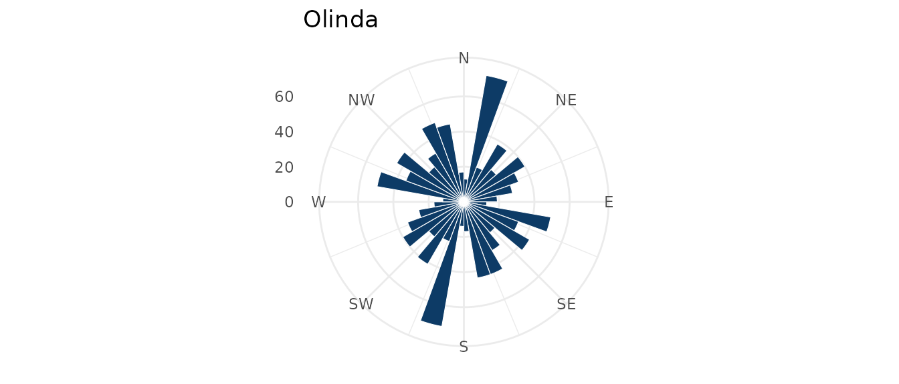
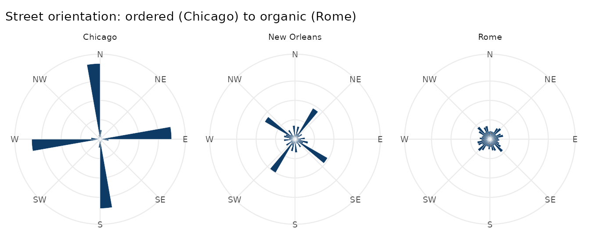

How ordered is a city’s street grid? Following Boeing (2019, 2025),
osmnxr measures this with the compass
bearing of every street and the Shannon
entropy of their distribution: low entropy for a rigid
gridiron, high entropy for an organic, winding network.
A real first network
ox_example("olinda") loads a small real network (the
historic centre of Olinda, Brazil) bundled with the package, so this
runs without network access:
g <- ox_example("olinda")
ox_orientation_entropy(g)
#> [1] 3.486313
ox_plot_orientation(g, title = "Olinda")
Olinda’s colonial street pattern is irregular, so its rose plot points in many directions and its entropy is high.
Comparing cities
The package bundles the bearings of three cities that span the spectrum — the same comparison as Figure 2 of Boeing (2025). These are real bearings, sampled from each city’s drivable network:
cities <- readRDS(system.file("extdata", "city_orientations.rds", package = "osmnxr"))
ent <- tapply(cities$bearing, cities$city, ox_orientation_entropy)
round(ent, 3)
#> Chicago New Orleans Rome
#> 2.473 3.272 3.550Chicago’s relentless grid gives the lowest entropy; New Orleans,
bending along the Mississippi, sits in the middle; Rome’s ancient
organic core is highest — near the theoretical maximum of
log(36) = 3.58.
library(ggplot2)
bins <- 36; bw <- 360 / bins
cities$sector <- (floor((cities$bearing %% 360) / bw) + 0.5) * bw
counts <- as.data.frame(table(city = cities$city, sector = cities$sector))
counts$sector <- as.numeric(as.character(counts$sector))
ggplot(counts, aes(sector, Freq)) +
geom_col(width = bw, fill = "#0d3b66", colour = "white", linewidth = 0.1) +
coord_polar(start = 0) +
scale_x_continuous(limits = c(0, 360), breaks = seq(0, 315, 45),
labels = c("N", "NE", "E", "SE", "S", "SW", "W", "NW")) +
facet_wrap(~ city) +
labs(x = NULL, y = NULL,
title = "Street orientation: ordered (Chicago) to organic (Rome)") +
theme_minimal(base_size = 9) +
theme(axis.text.y = element_blank(), panel.grid.minor = element_blank())
On your own city
With network access, compute this for any place straight from OpenStreetMap:
g <- ox_graph_from_place("Manhattan, New York, USA", network_type = "drive") |>
ox_simplify()
ox_orientation_entropy(g) # low: a famous grid
ox_plot_orientation(g, title = "Manhattan")